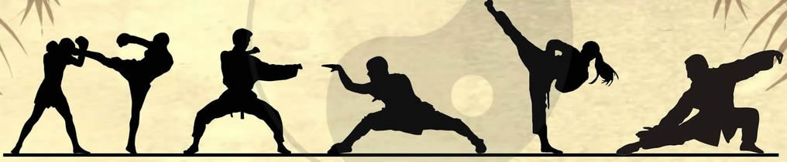

Seja Bem vindo!
Conheça um pouco sobre as Artes Marciais.
Artes marciais (do latim ars: "técnica", do romano: "deus Marte" - "A técnica de Marte") ou Wushu (chinês tradicional: 武術: "arte da guerra"), são práticas físicas e mentais, derivadas de técnicas de guerra, divididas em diferentes graus, com o objetivo de desenvolvimento de seus praticantes para que possam defender-se atacando, ou submeter o adversário mediante diversas técnicas, e também expressar um ideal. A expressão Wushu designa todas as artes guerreiras, militares ou marciais. Técnicas de autodefesa e combate passaram por aperfeiçoamento gradual e foram transmitidas às gerações posteriores. Na cultura ocidental, o Kung-Fu ficou conhecido como a “arte da guerra”, originando uma confusão com o Wushu, pois na cultura oriental são dois conceitos diferentes: o Kung-Fu faz parte do Wushu. Portanto, é apenas um dos estilos marciais e ensina, entre outras coisas, a importância do esforço individual. Artes marciais também são sistemas para treinamento de combate (treinamento militar, policial e de defesa pessoal) geralmente sem o uso de armas de fogo ou de outros dispositivos modernos. Artes marciais também são praticadas como modalidades de cunho esportivo, chamadas de desportos de combate, onde o objetivo principal são as competições (esportivo-competitivas). Existem diversos estilos, sistemas e escolas de artes marciais. O que diferencia as artes marciais da mera violência física (briga de rua) é a organização de suas técnicas em um sistema coerente de combate, desenvolvimento físico, mental e espiritual. Muitas destas artes de guerra orientais e ocidentais deram origem a atividades que atualmente são praticadas em todo o mundo, como por exemplo: Wushu; taekwondo; esgrima; arqueirismo (tiro com arco); boxe; savate; judô; karatê; luta olímpica (a luta greco-romana e a luta livre olímpica); ninjutsu; pancracio; muay thai;jiu jitsu; Krav Magá, entre outros.
(voltar)
Etimologia
O termo "arte marcial" ou "arte da guerra" tem origem ocidental,[1] quando na Roma antiga o deus grego-romano da guerra Marte/Ares ensinou a técnica de luta ao ser humano. Na Roma eram artes militares ensinadas aos homens, de acordo com a legião que atuava no exército do império, para o confronto direto ou corpo a corpo. Atualmente, o termo artes marciais é usado para todos os sistemas de combate de origem oriental e ocidental, com ou sem o uso das tradicionais armas de artes marciais. Mas apesar da mitologia este conceito não surgiu na Grécia ou na Roma, as raízes foram encontradas na Mesopotâmia, quando os povos arianos (da Ásia Central) conquistaram o Mundo Clássico (da Irlanda à Índia, do Egito à Rússia). A técnica guerreira ariana mesclou-se ao ioga hindu (respiração, visualização e, concentração). O objetivo primário das artes marciais é "defender-se atacando". No Oriente, existem outros termos mais adequados para a definição destas artes, como por exemplo: na China é chamado de wu shu, que significa em português "a arte de dominar a guerra" ou "parar a guerra"; No Japão e chamado de Buxido, que significa "caminho do guerreiro". Por outro lado, as modalidades que têm uma origem mais marcial, como o krav magá, têm como objetivo a defesa pessoal em situações de risco, durante combate corpo a corpo sem regras, muitas vezes com enfoque na formação do caráter do ser humano. Onde no Japão, estas são chamadas de Bu-Dô, que significa "Caminho educacional através das lutas".
(voltar)
História
Ver também: Cronologia das artes marciais Sua origem confunde-se com o desenvolvimento da civilização, quando, logo após o desenvolvimento da onda tecnológica agrícola, alguns começam a acumular riqueza e poder. Com isso, surgiram a cobiça, inveja e seu corolário, a agressão. A necessidade abriu espaço para a profissionalização da proteção pessoal. Embora a versão mais conhecida da arte marcial, principalmente a história oriental, tenha, como foco principal, Bodhidharma, monge Indiano que, em viagem à China, orientou os monges chineses na prática da ioga e rudimentos da arte marcial indiana, o que resultou posteriormente na criação de um estilo próprio pelos monges de shaolin, é sabido, historicamente, através da tradição oral e escavações arqueológicas, que o kung fu já existia na China há mais de 5 000 anos. Da China, estes conhecimentos se expandiram por quase toda a Ásia. Japão e Coreia também têm tradição milenar em artes marciais. No Japão, destacam-se o judô, o caratê (com seus estilos, como o shotokan, Kyokushin, bushi-ryu, shito-ryu, shorin-ryu etc.), o jiu-jítsu, o quendô, o aiquidô, etc. Recentes descobertas arqueológicas também mostram guardas pessoais na Mesopotâmia praticando técnicas de defesa e de imobilização de agressores. Paralelamente, o mundo ocidental desenvolveu outros sistemas, como o savate francês. Atualmente, pessoas de todo o mundo estudam artes marciais por diferentes motivos: condicionamento físico, defesa pessoal, melhora da coordenação física, lazer, desenvolvimento de autodisciplina, participação em um grupo social e estruturação de uma personalidade sadia, visto que a prática possibilita o extravasamento da tensão, o que harmoniza o indivíduo, focalizando-o em pensamentos positivos. No sistema, o enfoque na respiração proporciona benefícios físicos e psicológicos, como diminuição do cansaço, potencialização dos movimentos, aumento da autoconsciência e tranquilização. As artes marciais apresentam uma enorme variedade de golpes. O combate no solo emprega principalmente contra o oponente técnicas de: quedas, chaves, torção, estrangulamentos e imobilizações. Dependendo do estilo, também podem envolver socos, chutes, joelhadas, cotoveladas e golpes com a cabeça, que são, em geral, aplicados nas técnicas de combate em pé. O termo da língua inglesa ground and pound (em português, pode ser: "socar", "triturar", "encurralar") designa os golpes traumáticos desferidos contra o oponente dominado no solo.
(voltar)